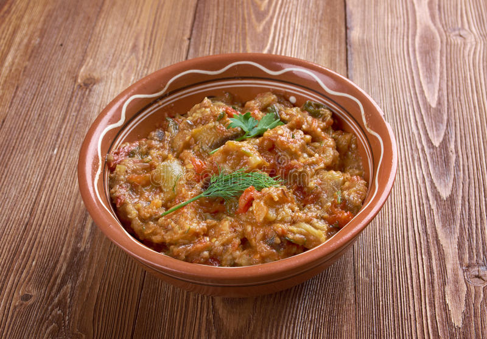

Moroccan Zaalouk

Description:
This cooked salad is made with eggplant, tomatoes, garlic, olive oil, and spices and served as a side dish to many meals but is usually presented as a dip alongside crusty bread.
Ingredients
- 1 large eggplant, peeled and chopped
- 4 large tomatoes, peeled, seeded, and chopped
- 3 cloves garlic, finely chopped
- 1/4 cup fresh cilantro, chopped
- 1/4 cup parsley, chopped
- 1 tablespoon paprika
- 1 tablespoon cumin
- 1 1/2 teaspoons salt
- 1/4 cup extra-virgin olive oil
- 1/3 cup water
- 1/8 teaspoon cayenne pepper
- 1 lemon wedge
Steps:
- Combine eggplant, tomatoes, garlic, cilantro, parsley, paprika, cumin, salt, oil, water, and cayenne in a large deep skillet or pot.
- Cover and simmer over medium to medium-high heat for 30 minutes, stirring occasionally.
- With the help of a spoon or potato masher, crush and blend tomatoes and eggplant.
- Add lemon wedge to the pot, if using. Continue simmering mixture, uncovered, for 10 minutes. The lemon will give a tangy nuance but is not necessary.
- The zaalouk is ready when liquids are reduced and mixture can be stirred into a heap in the center of the pan.
- Drizzle olive oil—or chile oil if you like spicy food. Serve with sliced crusty bread.